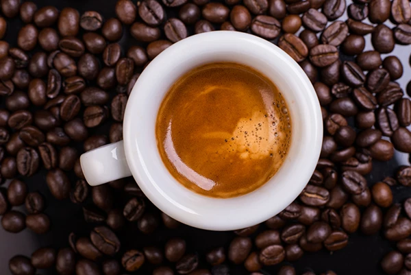

Extracciones intensas y aterciopeladas preparadas al momento con nuestra mezcla insignia 100% Arábica.
Calibramos cada shot para lograr una crema dorada perfecta con notas dulces de cacao y avellana tostada, ideales para disfrutar solos o como base de nuestras bebidas especiales de la casa.

Personalízalos con tus lácteos o vegetales y jarabes favoritos.
Doble extracción concentrada con cuerpo sedoso, acidez balanceada y retrogusto a avellana tostada.